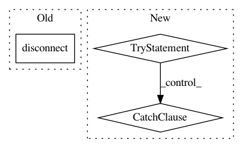

fe7648bf592638b1901bd1f5b0fa6b72115e304d,anvio/tables/taxoestimation.py,TablesForTaxoestimation,taxonomy_estimation_to_profile,#TablesForTaxoestimation#Any#,116
Before Change
self.bin_database = db.DB(self.profile_db_path, utils.get_required_version_for_db(self.profile_db_path))
self.bin_database.insert_many(t.taxonomy_estimation_bin_name, possibles_taxonomy)
self.bin_database.disconnect()
def get_dic_id_bin(self,args):
self.bin_database = db.DB(self.profile_db_path, utils.get_required_version_for_db(self.profile_db_path))
After Change
self.database.disconnect()
def taxonomy_estimation_to_profile(self,possibles_taxonomy):
try:
self.bin_database = db.DB(self.profile_db_path, utils.get_required_version_for_db(self.profile_db_path))
self.bin_database.insert_many(t.taxonomy_estimation_bin_name, possibles_taxonomy)
except:
self.run.warning(traceback.print_exc(), header="Anvi\"o fail the enter the result in %s" % self.profile_db_path, lc="red")
finally:
self.bin_database.disconnect()
def get_dic_id_bin(self,args):
self.bin_database = db.DB(self.profile_db_path, utils.get_required_version_for_db(self.profile_db_path))
self.database = db.DB(self.db_path, utils.get_required_version_for_db(self.db_path))
In pattern: SUPERPATTERN
Frequency: 3
Non-data size: 3
Instances
Project Name: merenlab/anvio
Commit Name: fe7648bf592638b1901bd1f5b0fa6b72115e304d
Time: 2019-08-14
Author: quentin.clayssen@gmail.com
File Name: anvio/tables/taxoestimation.py
Class Name: TablesForTaxoestimation
Method Name: taxonomy_estimation_to_profile
Project Name: merenlab/anvio
Commit Name: fe7648bf592638b1901bd1f5b0fa6b72115e304d
Time: 2019-08-14
Author: quentin.clayssen@gmail.com
File Name: anvio/tables/taxoestimation.py
Class Name: TablesForTaxoestimation
Method Name: taxonomy_estimation_to_congis
Project Name: home-assistant/home-assistant
Commit Name: 342ec8ec99637f12246110ff4ff1d84e33d77d35
Time: 2017-07-31
Author: steven.looman@gmail.com
File Name: homeassistant/components/media_player/mpd.py
Class Name: MpdDevice
Method Name: update